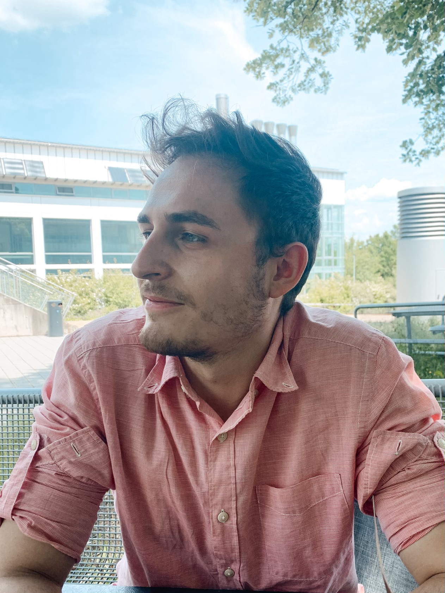

Berufsbeschreibung:
Ich bin Biochemiker und Molekularbiologe mit Erfahrung im organisch-chemischen Labor (Festphasenpeptidsynthese, Destillation, etc.), wie auch im biotechnologischen Bereich (Zellbiologie, Toxizitätsbewertung, ...).
Meine Bachelorarbeit umfasste Techniken der LC-MS, HPLC, Flashchromatographie und der Peptidsynthese, welche am Lehrstuhl für Bioorganische Chemie an der Universität Bayreuth verfasst wurde. Hier konnte ich ein Nona-Saccharids an ein Fragment der Serinprotease Bikunin per Lansbury Aspartylierung verknüpfen zur Optimierung der Synthesewege und letzlichen Darstellung des Bikunins als Peptidoglykan.
In meiner Masterarbeit beschäftigte ich mich mit der Bewertung der zytotoxischen Wirkung von Polystyrol auf murine Makrophagen und Epithelzellen. In dieser Zeit konnte ich mir eine Bandbreite an Techniken aneignen und festigen, besonders in der Zellkultur, wie die Beurteilung der Zellproliferation (XTT, o.a.) anhand diverser Kits oder der (semiautomatischen) Auswertung von Daten via Programmierung/Makros (Python/ImageJ). Außerdem verfüge ich seitdem über einen sicheren Umgang in der Rasterelektronen-, Konfokal-, und Lichtmikroskopie. Die Arbeit wurde am Lehrstuhl für Tierökologie unter Prof. Dr. Christian Laforsch und am Lehrstuhl für Biophysik unter Prof. Dr. Holger Kress, ebenfalls an der Universität Bayreuth, durchgeführt.
Ein weiteres Forschungsprojekt, das mir stark am Herzen lag, war das Tissue Engineering der Cornea (Auge) über in Hydrogel eingebettete Fibroblasten, wobei das Hydrogel per UV-initiierte Polymerisation von Gelatinderivaten synthetisiert wurde. Dieses Projekt lief unter der Leitung von Dr. Sahar Salehi an der Technischen Allianz Oberfranken.
Ich arbeite äußert gerne mit Menschen zusammen, sei es als Teammitglied in einem Projekt oder als Betreuer/Projektleite. Dies wurde mir durch die Betreuung von universitären Laborpraktika, in der Zeit als Schülerbetreuer in der Johann-Turmair-Realschule Abensberg und als Schulmediator in der Oberstufe während des Abiturs, bewusst.
Darüber hinaus sozialisiere mich auch außerhalb der Arbeit gerne und reise gerne.
Zudem bin ich technisch versiert und lerne mit Vorliebe neue (Arbeits-)Techniken kennen.
Hobbies/außerberufliche Aktivitäten:
Ich freue mich auf Ihre Anfragen!